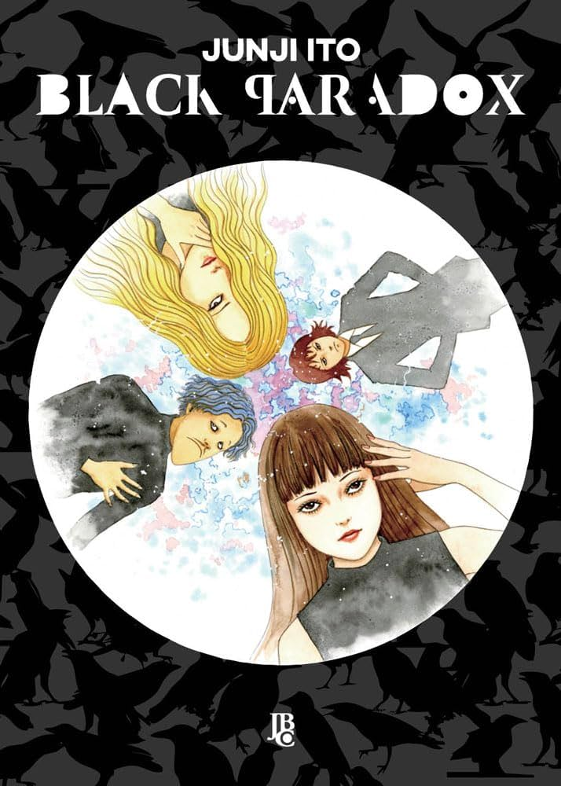

Black Paradox
Black Paradox (ブラックパラドクス, Burakku Paradokusu?) é uma coleção de mangá seinen de Junji Itō, pré-publicada em uma edição especial da revista Big Comic Spirits então publicada pela Shōgakukan em um volume encadernado lançado em março de 20091. A versão francesa foi publicada por Tonkam na coleção “Frissons” em um volume lançado em outubro de 2012.